Home
About Us
▼
Who We Are
Mission and Vision
Values
Human Talent
Projects
▼
Phosphates
Brines
Sustainability
▼
Social Responsability
Health, Safety and Environment
Corporate Communication
Contact Us
Español
/
English
Home
About Us
Who We Are
Mission and Vision
Values
Human Talent
Projects
Phosphates
Brine
Sustainability
Social Responsability
Health, Safety and Environment
Corporate Communication
Contact Us
Español
English
Growing together
For sustainable development of Sechura.
Social Responsibility
Beca Docente (Teacher Scholarship)
Communication and Dialogue
PROGRAM
Description
Beneficiaries
Video
Radio Spots
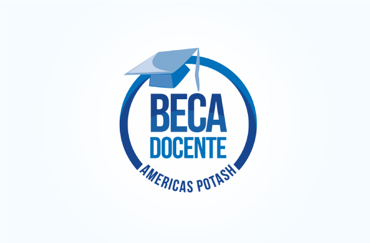
Beca Docente is a motivation for teachers in Sechura to improve their performance.
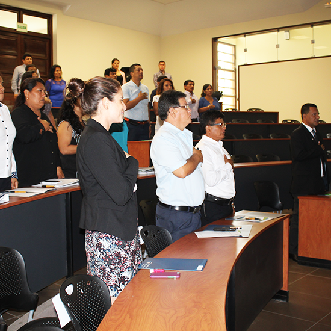
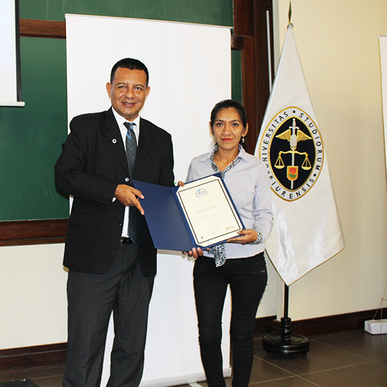
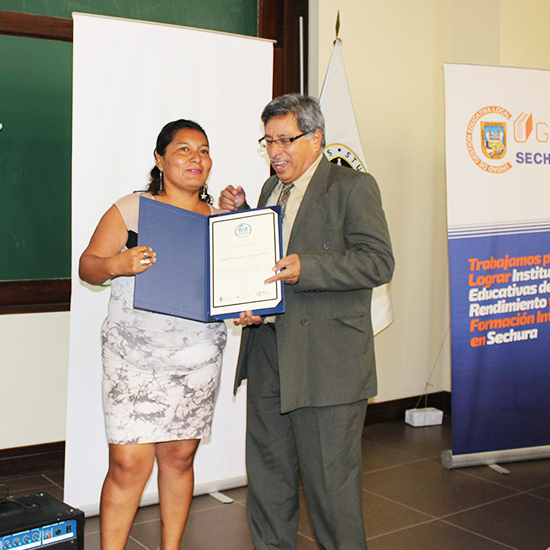
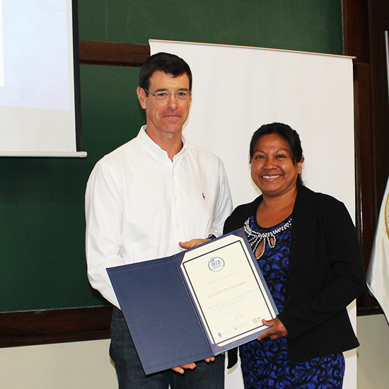
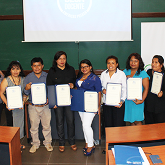
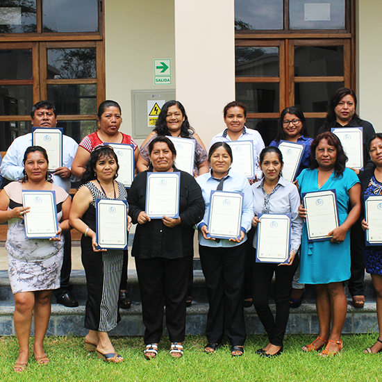
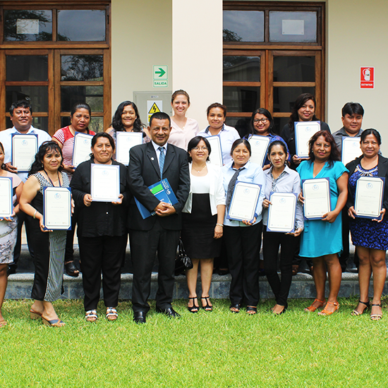
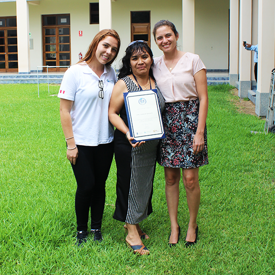
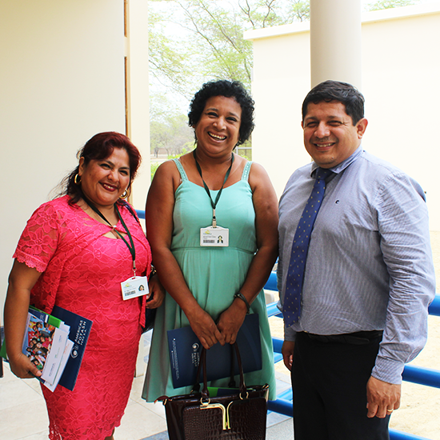
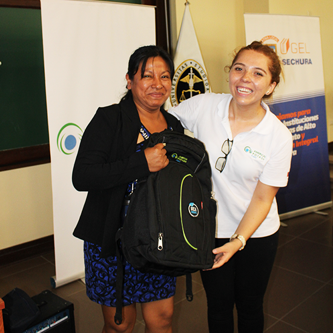
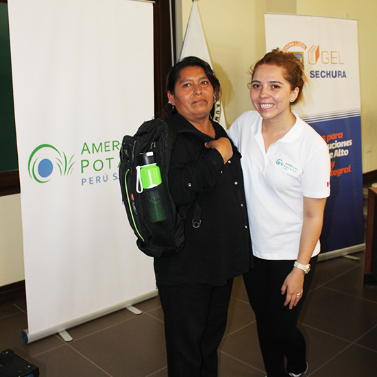
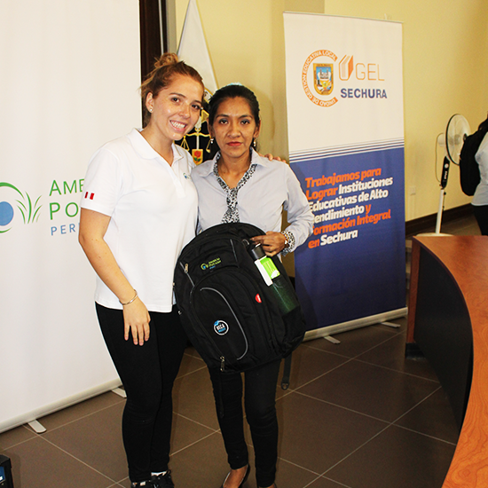
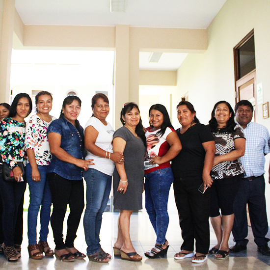
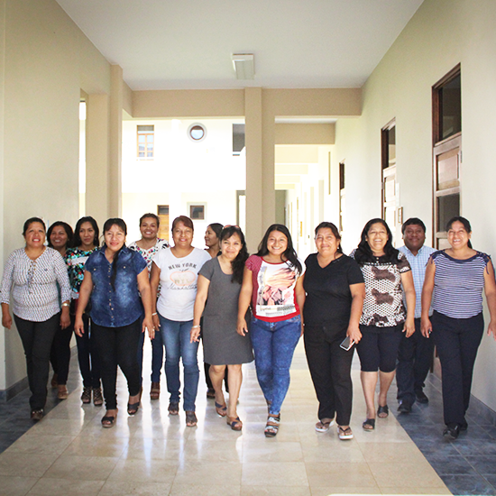